Elon "Starship" Musk
Mogul · Large man · weight 0.46, muscle 0.26, age 0.55
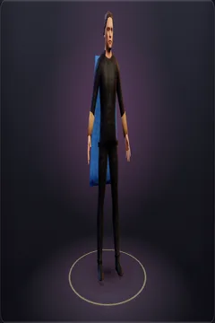
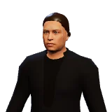
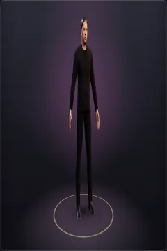
- Short
- Leather jacket over a tee
- Jeans
- Boots
Each starter used to be its own model, built by hand in Blender, and the game found it by the hero's exact name. That's why Remix broke: rename the copy and the model was gone. Now every starter is an ordinary look. Its face is the same portrait, fitted in the browser the way a player's photo is, and its body and physique come from the person's build. Its hair, beard, outfit and glasses are library items anyone can wear.
Two things are gone on purpose. The role armour (pauldrons, sashes, capes) was battle gear bolted onto suits, and armour is something you pick from the wardrobe now. The other is each person's own height. The size class sets a hero's height, so what you see is what can be hit. Buffett at 90 and Trump at 79 both cap at the oldest the age slider goes, which is 75.
Mogul · Large man · weight 0.46, muscle 0.26, age 0.55



Mogul · Medium man · weight 0.50, muscle 0.33, age 0.70
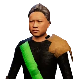
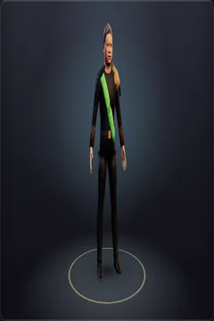
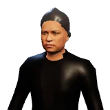
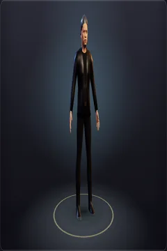
Mogul · Huge man · weight 0.33, muscle 0.40, age 0.70
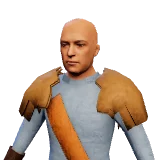
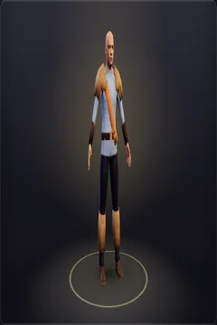
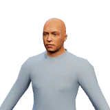
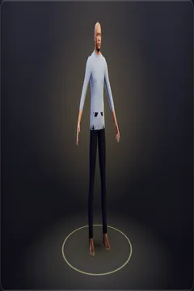
Mogul · Small man · weight 0.53, muscle 0.50, age 0.28
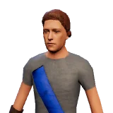
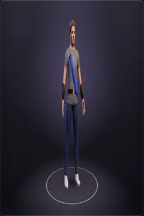
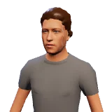
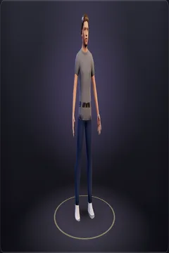
Mogul · Medium man · weight 0.50, muscle 0.27, age 0.64
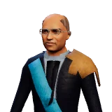
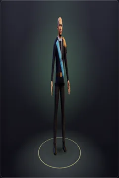
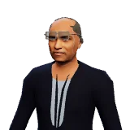
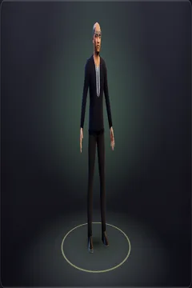
Mogul · Small man · weight 0.48, muscle 0.33, age 0.26
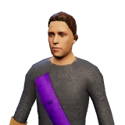
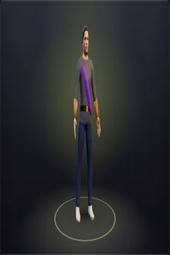
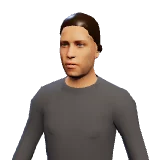
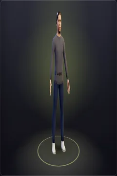
Mogul · Tiny man · weight 0.58, muscle 0.25, age 1.00
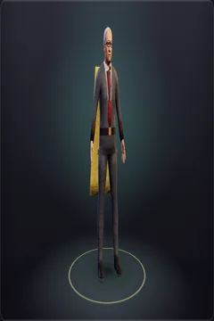
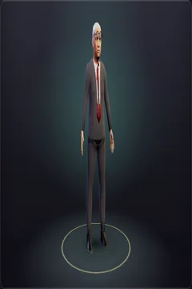
Mogul · Medium woman · weight 0.66, muscle 0.27, age 0.91
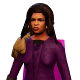
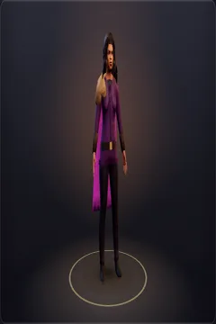
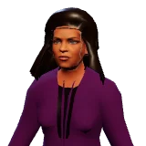
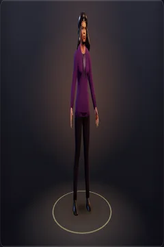
Mogul · Large man · weight 0.62, muscle 0.20, age 0.83
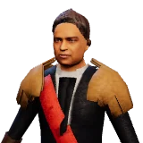
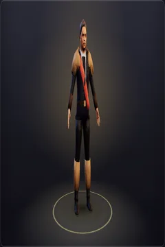
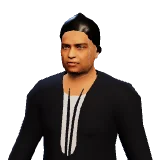
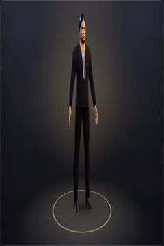
Mogul · Tiny woman · weight 0.41, muscle 0.38, age 0.57
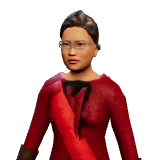
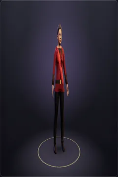
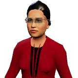
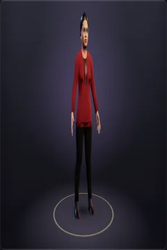
World leader · Huge man · weight 0.18, muscle 0.23, age 0.60
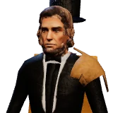
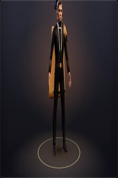
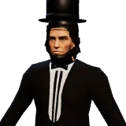
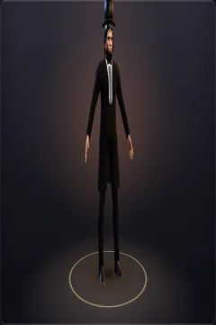
World leader · Large man · weight 0.81, muscle 0.20, age 0.85
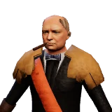
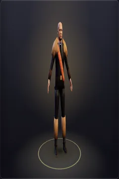
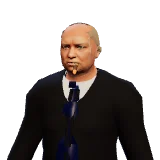
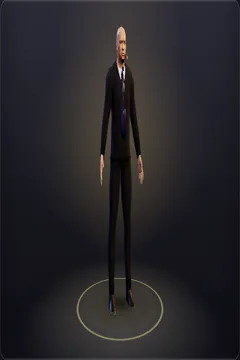
World leader · Medium man · weight 0.40, muscle 0.33, age 0.77
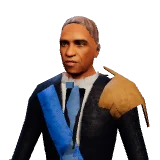
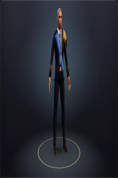
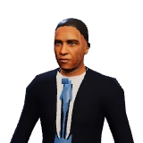
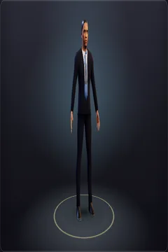
World leader · Large man · weight 0.56, muscle 0.23, age 1.00
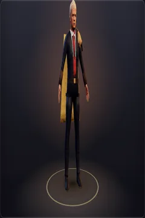
World leader · Medium man · weight 0.60, muscle 0.23, age 1.00
World leader · Medium woman · weight 0.62, muscle 0.23, age 0.91
World leader · Small man · weight 0.48, muscle 0.38, age 0.40
World leader · Medium man · weight 0.55, muscle 0.41, age 0.40
World leader · Small woman · weight 0.57, muscle 0.38, age 0.36
World leader · Tiny man · weight 0.38, muscle 0.38, age 0.51